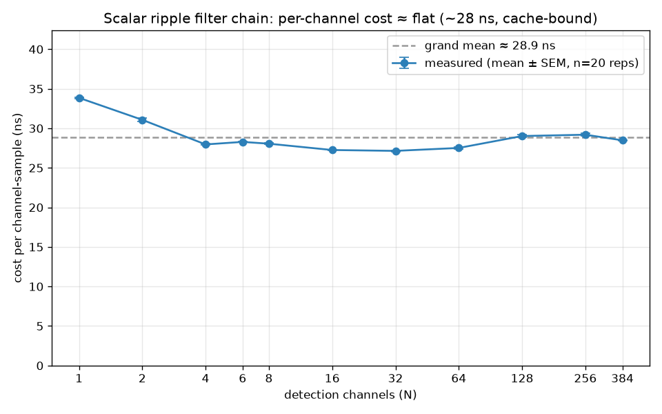
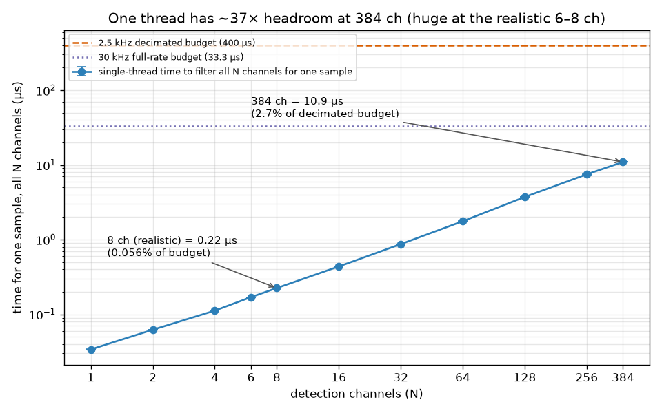

Ripple detector — threading & compute trade-off report#
Question: should each per-electrode detector run on its own thread (with a central arbiter thread), or is the current single-thread design right? And is the filtering AVX-accelerated?
TL;DR (measured on this box, 2026-07-08): the per-channel filter chain costs ~28 ns / channel-sample
(scalar, /O2). At the detector's 2.5 kHz decimated rate a single thread can process ~14,000 channels
within one sample period; the whole 384-channel probe uses 2.7 % of one core. The dominant closed-loop
latency is filter group delay + envelope build (~7–40 ms), which is threading-independent, so
multithreading does not reduce it at these scales — it adds a small cross-thread synchronization cost for
the quorum decision. Multithreading only becomes necessary when per-channel-cost × channel-count approaches
the per-sample budget (thousands of channels, or a much heavier per-channel algorithm, or full-rate 30 kHz
processing of both). Before threads, the higher-leverage optimization is AVX (8× per op, zero sync cost) —
which this codebase already uses for proc.lfp but the detector does not. Numbers, method, and the crossover
where multithreading wins are below, plus the plausible reasons a prior version was multithreaded.
0. What has changed since — read before quoting a number from this page (added 2026-08-31)#
This is a dated one-shot trade-off report from 2026-07-08 and it is kept as one. The method and the conclusion still hold: the detector's ripple-band and envelope filters are still scalar, single-thread inline is still the right design, and AVX still comes before threads. Three things have been measured since that a reader must not carry away wrong.
1. AVX2 is 3.10×, not 8×. §6 projects the post-AVX ceiling from the lane count (8 channels per op).
The measured speedup of the AVX2 filter path is 3.10× — 498.8 ns against 1547.3 ns per
384-channel sample row, stable across three repeats (Profiling.md §4). Lane count is an upper bound, not a speedup: loads,
stores and the delay-line shift do not vectorize away. So §6's projected single-thread ceilings are about
2.6× too high — read ~14 k → ~44 k decimated and ~1.2 k → ~3.7 k full-rate, not 113 k / 9.4 k.
The ordering argument (SIMD adds no wake or scheduling latency, so it beats threads at every scale below
saturation) is unaffected; only the size of the win moves.
2. The "~1–2 ms" UDP/stim-server row in §3 is a superseded estimate. It was a plausible budget written
before anything was measured, and it is larger than the entire closed loop turned out to be: threshold
crossing → stimulus at the electrode is 0.55–0.98 ms, n ≈ 1000 per cell, on both probes and both
transports. Read that row as "not measured at the time", not as a term in a budget. Measured numbers:
../RecordingTests/CLOSED_LOOP_LATENCY.md; the per-stage
instrumentation is in LatencyProfiling.md.
3. This page uses a different latency definition from the rest of the repo, and the two are not
comparable. Here, latency is ripple ONSET → stimulation, with the filters' group delay INCLUDED —
hence the ~7 ms fixed FIR delay plus ~10–30 ms of envelope build in §3. The repo's canonical definition is
threshold crossing → stimulus at the electrode, group delay EXCLUDED, because the group delay is a fixed
function of the tap count and not part of the loop. That is why this page says tens of milliseconds and
CLOSED_LOOP_LATENCY.md says a fraction of one: they are measuring different quantities, not
contradicting each other. Neither number is wrong; quoting one against the other is.
None of this changes §8's recommendation.
1. What the detector actually does today (facts, from the code)#
- The ripple-band + envelope filters are SCALAR, not AVX.
RippleDetectorholdsstd::vector<Filter> mRippleBandFiltersandmEnvelopeFilters— one scalarFilter(src/core/Filter.hpp, Direct-Form IIR/FIR, one sample at a time) per detection channel. Per decimated sample it runs, for each selected channel: ripple-band FIR (26-tap) →abs→ envelope FIR (10-tap) → threshold/quorum logic. - AVX is used only by the derived-band processors (
Avx2Filter, 8 channels per op) —proc.lfp, which derivesdata.lfpfromdata.npx.rawon the NP2 path, and, since the spike band arrived,proc.spike; both are the sameBandFilterProcessorbase. Those are separate processors on their own threads, and neither of them is the detector's per-channel filtering:proc.lfpis not in the NP1 path at all (a 1.0 streams a hardware LFP band, so nothing derives one), and the detector itself still runs scalarFilters wherever it runs —RippleDetector.hppincludesAvx2Filter.hppand uses nothing from it. - Threading model:
ProcessorManagermoves eachIProcessoronto its own worker thread (proc.rippledetector,proc.lfp,proc.npx.display, … each dedicated). Within the detector's single thread, the N per-electrode detectors run sequentially in one loop, and the quorum/stimulation decision is made inline. So: one thread for the whole detector — not one-thread-per-electrode + a separate arbiter. - Rate: the detector processes the ripple band at 2.5 kHz (decimated: ÷1 from native NP1 LFP, ÷12 from the 30 kHz NP2-derived LFP). The outer read loop iterates at the input rate (2.5 or 30 kHz) but only does the filter work on decimated samples.
2. Measurement (so this isn't hand-waving)#
benchmarks/bench_ripple_filter.cpp times the exact per-channel chain (Filter::setDefaultRippleBandFilterCoefs
→ addSample → abs → Filter::setDefaultEnvelopeCoefs → addSample) over 400 k iterations, compiled the same
way as Release. Reproduce:
call "…\VC\Auxiliary\Build\vcvars64.bat"
cl /O2 /std:c++20 /EHsc /I src\core benchmarks\bench_ripple_filter.cpp src\core\Filter.cpp /Fe:bench.exe
bench.exe
Result on this box (MSVC2019 /O2, Windows, the SpikesPeak build machine):
1 channel : 34.09 ns / channel-sample
3 channel : 28.24
8 channel : 27.14
64 channel : 26.49
384 channel : 27.96
Representative per-channel cost: 28.30 ns
Single-thread channels within one sample budget:
decimated 2.5 kHz (400.0 us): 14133 channels
full-rate 30 kHz ( 33.3 us): 1178 channels
384-channel sweep, one sample: 10.87 us (2.7% of the 400 us decimated budget)
So the whole probe's per-channel filtering costs ~11 µs once every 400 µs — one core sits ~97 % idle.
2.1 Repeated measurement (mean ± SEM, n = 20 reps × 11 channel counts)#
benchmarks/plot_bench.py bench_results.csv developer_docs/images re-runs the sweep 20× per channel count
and produces the figures below. The per-channel cost is flat at ~28 ns (cache-bound; the delay-line shift
+ 26+10 taps fit in L1), with SEM ≤ 0.23 ns — i.e. the number is stable, not a lucky single run.
| Channels (N) | Cost per channel-sample (ns, mean ± SEM) |
|---|---|
| 1 | 33.9 ± 0.08 |
| 2 | 31.1 ± 0.23 |
| 4 | 28.0 ± 0.07 |
| 6 | 28.3 ± 0.06 |
| 8 | 28.1 ± 0.08 |
| 16 | 27.3 ± 0.06 |
| 32 | 27.1 ± 0.09 |
| 64 | 27.5 ± 0.13 |
| 128 | 29.0 ± 0.18 |
| 256 | 29.2 ± 0.16 |
| 384 | 28.5 ± 0.06 |
Grand mean 28.9 ns/channel-sample ⇒ a single thread's ceiling is ~13,800 channels at the 2.5 kHz decimated rate, ~1,150 at the full 30 kHz rate.

Per-channel cost is essentially flat with N — the work is O(1) per channel, so N channels cost N × ~28 ns.

Single-thread time to filter ALL N channels for one sample (log-log), against the 2.5 kHz decimated (400 µs) and 30 kHz full-rate (33.3 µs) per-sample budgets. At the realistic 6–8 channels it is 0.056 % of budget; even the full 384-channel probe is 2.7 %. One thread only runs out of decimated budget past ~13,800 channels — the crossover where multithreading becomes necessary (§4/§5).
3. Where the closed-loop latency actually goes (and it isn't the compute)#
Ripple-onset → stimulation latency, by term:
| Term | Magnitude | Depends on threading? |
|---|---|---|
| Ripple-band FIR group delay (26-tap @ 2.5 kHz = (26−1)/2 / 2500) | ~5.0 ms | No |
| Envelope FIR group delay (10-tap @ 2.5 kHz) | ~1.8 ms | No |
| Envelope build to threshold crossing (physics of threshold-on-envelope) | ~10–30 ms | No |
| Per-sample compute (filter one channel-set) | ~0.03 µs/ch → ~11 µs for 384 ch | Marginally |
| Semaphore wake of the detector thread on new data (already event-driven) | ~sub-µs–µs | No |
| Stimulator UDP fire → stim server (Pi 3B+ / ESP32) | ~1–2 ms (network + device) | No |
The dominant terms (~7 ms fixed filter delay + ~10–30 ms envelope build) are DSP/physics, not compute, and are identical whether the filtering runs on 1 thread or N. The compute term is ~1000× smaller than the dominant terms and is nowhere near saturating a core. So splitting the per-channel filtering across threads cannot reduce the closed-loop latency at these scales — the thing you'd parallelize is already 2.7 % of budget.
4. The single-thread ceiling (crossover: when does one thread run out of time?)#
A single thread keeps up as long as channel-count × per-channel-cost < sample period. So the ceiling is
N_max = sample_period / per_channel_cost. With the measured 28 ns:
| Per-channel cost | (relative to now) | N_max @ 2.5 kHz (400 µs) | N_max @ 30 kHz (33.3 µs) |
|---|---|---|---|
| 28 ns | 1× (current scalar) | 14,133 | 1,178 |
| 112 ns | 4× (heavier filters) | 3,571 | 297 |
| 448 ns | 16× (multi-band / spectral) | 893 | 74 |
| 1,792 ns | 64× (wavelet / per-ch ML) | 223 | 18 |
Read this as: one thread comfortably handles the 384-channel probe in every row except the extreme bottom-right — full-rate (no decimation) and a ~64×-heavier per-channel algorithm. That combination (≈ full-rate wavelet/ML on every channel) is the regime where a single thread misses the deadline and multithreading (or AVX, or GPU) becomes necessary.
5. What multithreading costs here (and when it wins)#
Cost at these scales. A per-electrode-thread + central-arbiter design has to hand each channel's threshold-crossing to the arbiter to evaluate the quorum. That hand-off is a cross-thread wake (condition variable / semaphore / lock-free queue) costing typically ~1–10 µs (sub-µs best case, tens of µs under contention), plus scheduling jitter from N threads contending for cores. The single-thread design makes the same quorum decision inline (a loop over N per-channel states, ~tens of ns). So at ≤384 channels, per-electrode threads add a small amount of decision latency and complexity for no throughput benefit (one core was 97 % idle). In absolute terms both are dwarfed by the ~7–40 ms DSP/physics floor — but "adds latency, buys nothing" is the wrong side of the trade.
When multithreading genuinely wins:
1. N × per-channel-cost approaches the sample period — i.e. the bottom-right of the §4 table: thousands of
channels, or a much heavier per-channel algorithm, and/or processing at full 30 kHz without decimation.
2. Isolation / fault-tolerance as a design goal (one channel's expensive analysis can't stall the loop) —
a legitimate architectural reason independent of raw latency.
3. Heterogeneous per-channel work (different algorithms/rates per channel) that doesn't vectorize.
6. The higher-leverage lever before threads: AVX#
The detector's per-channel filters are scalar. This codebase already has Avx2Filter (8 channels per op),
used by proc.lfp. Vectorizing the detector's ripple-band + envelope filters the same way gives ~8× per-op
throughput with ZERO cross-thread synchronization — pushing N_max from ~14 k to ~113 k (decimated) or ~9.4 k
(full-rate). Because SIMD adds no wake/scheduling latency, for the filtering step AVX beats threads at every
scale below the point where even 8-wide SIMD saturates a core. So the optimization order is: scalar (now,
plenty) → AVX (if channel counts/algorithms grow) → threads (only if AVX still can't hit the deadline). A
cheaper micro-win also exists: Filter uses a std::copy_backward delay-line shift each sample (O(taps) moves);
a circular buffer would cut that, though at 28 ns it isn't needed yet.
7. Reconciling with a prior multithreaded ripple detector#
A previous version being multithreaded is not contradicted by this analysis — it just implies its operating point was in the regime of §4/§5 where threads pay off. Plausible reasons, any of which justify it: - It processed at the full sample rate (no ÷12 decimation), cutting the budget 12× (33 µs, not 400 µs). - Its per-channel algorithm was heavier (higher-order/multi-band filters, spectral/wavelet features, or a per-channel model) — 16–64× the ~28 ns here. - It ran on many more channels (a large array / multi-probe) or older/slower hardware with fewer cores. - It used scalar filters (like this one) but at a scale where §4's ceiling was actually reached — where the right fix could equally have been AVX. - It was multithreaded for isolation/modularity (a design choice), not measured latency.
None of these are wrong; they're different requirements. The claim here is narrow and measured: for the current implementation (scalar 26+10-tap filters, ≤384 channels, decimated to 2.5 kHz), single-thread inline is lower-latency and simpler, with ~37× headroom on one core.
8. Recommendation + decision guide#
- Keep single-thread for the current design (scalar filters, ≤384 channels, 2.5 kHz). It's lower-latency (no cross-thread quorum hand-off) and simpler, and one core is 97 % idle.
- If requirements move — full-rate processing, thousands of channels, or a much heavier per-channel algorithm — reach for AVX first (8×, no sync cost), then threads only if AVX still can't meet the deadline.
- Trigger to revisit:
channels × per-channel-cost ≳ 0.5 × sample_period(leave headroom for jitter). Re-runbenchmarks/bench_ripple_filter.cppafter any change to the filters/rate to refresh the per-channel cost. - If you want per-electrode threads anyway (e.g. isolation, or you know your target algorithm is heavy), say so and I'll implement the worker-per-channel + arbiter design — it slots behind the same config/quorum surface. I'd keep the quorum arbiter as the one "central" thread you described.
9. Caveats#
- The ~28 ns is a micro-benchmark of the filter chain in isolation on this box; it excludes buffer/cache
effects of the live pipeline and OS scheduling. The conclusion has ~37× margin, so those effects don't
change it — but the honest way to nail the end-to-end closed-loop latency is to instrument the detection
path on the target rig. That was done afterwards and it agrees: per-stage
rippleLatencytimestamps now bracket the live path, and detection + dispatch measures 8–15 µs on real hardware against a sub-millisecond loop — seeLatencyProfiling.md. - Thread wake costs (~1–10 µs) are cited typical values, not measured on this box; they are also ≪ the DSP floor, so they don't change the recommendation either.